The slide of the lecture is on the left, the same figure or table on the right, computed in the browser from the same data. The ▶ button moves the parameter step by step; the “Worked example” boxes redo the calculation with the numbers of the chapter.
Bubbles in history · Rational bubbles and explosive roots · The LPPL model · Estimation · Confidence from many windows · Evaluation of crash predictions
Bubbles in history
Six run-ups and crashes in the course data
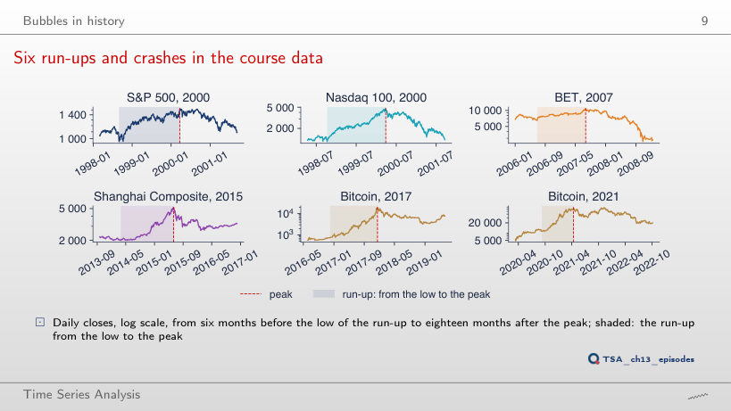
Answer
Bitcoin, 2017: the lowest close within the first 91 days is 64% below the peak of 16 December 2017; next come Bitcoin 2021 (50%), Shanghai (43%) and the Nasdaq 100 (36%), while the S&P 500 falls only 11%. At 12 months the order is almost the same, but the S&P 500 reaches 27% and the Nasdaq 100 66%: part of the fall comes slowly.
Interpreting the six episodes
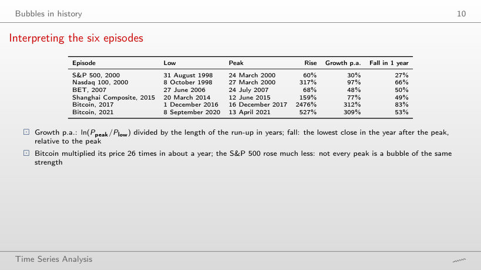
Answer
37% below the peak, less than the largest fall of 49% within the same 18 months: after the low of January 2016 the price recovered in part. The two measures answer different questions: how large the fall was and where the price stayed.
Rational bubbles and explosive roots
Worked example: a bubble that can burst
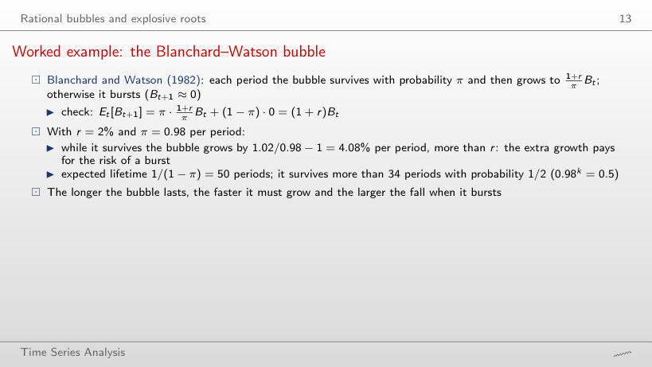
Worked example
Answer
By 1.02/0.90 − 1 = 13.3% per period, against 4.08% for π = 0.98: the more likely a burst, the faster the bubble must grow while it survives, so that the mean stays at 1 + r. The expected lifetime falls to 1/(1 − 0.90) = 10 periods.
A simulated rational bubble and three AR(1) roots
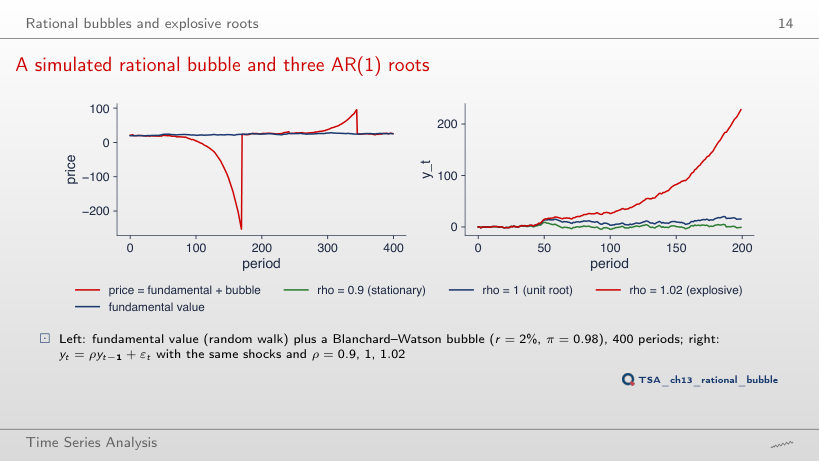
Answer
By 1.04¹⁰⁰ = 50.5, against 1.02¹⁰⁰ = 7.24: the factor grows exponentially with the number of periods, so doubling the rate roughly squares it (7.24² ≈ 52, close to 50.5). A shock now doubles in 17.7 periods instead of 35.
SADF, GSADF and BSADF (1/2)
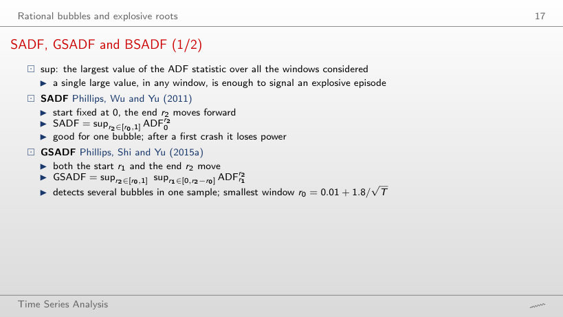
Worked example
Answer
In the week of 8 January 1999, more than a year before the peak of March 2000; SADF reaches 2.72. The whole-sample ADF (−1.27) does not reject because the collapse of 2000–2002 pulls the statistic of the whole sample down; the supremum over windows avoids this.
SADF, GSADF and BSADF (2/2)
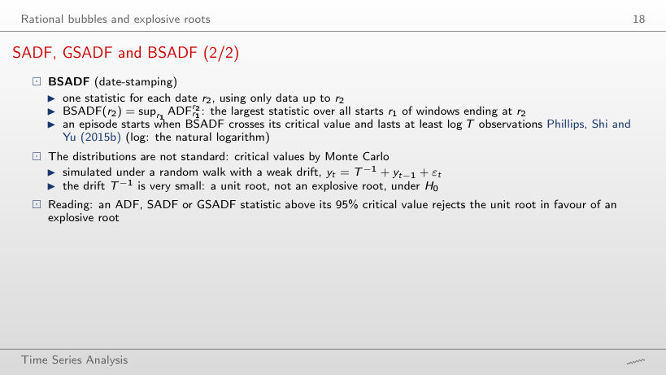
Worked example
Answer
On 4 December 1998, the seventh week in a row above the critical value: in real time the minimum-length rule confirms an episode only after log T ≈ 7 weeks, although its start date remains 23 October 1998. The end of the episode (3 November 2000) is known even later.
Worked example: one window of the Nasdaq 100
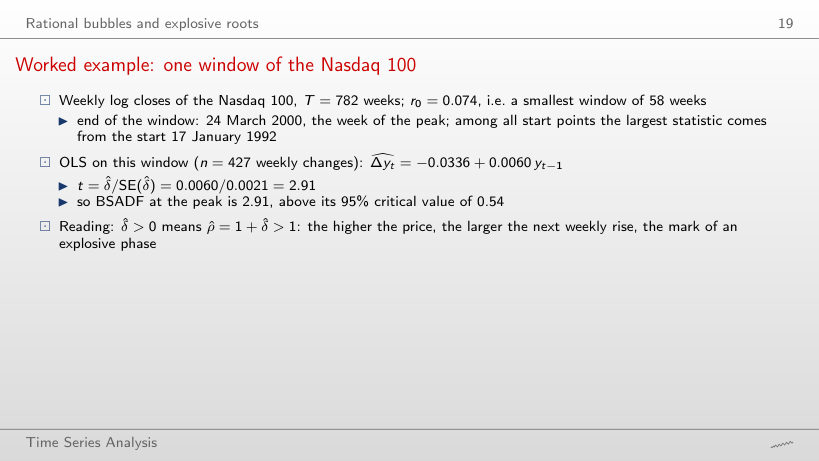
Worked example
Answer
No: BSADF is −0.20, below the critical value 0.53; the largest statistic now comes from the start of the sample (5 January 1990). Once the window contains the fall, high prices are no longer followed by large rises, and δ̂ turns negative for every start.
Explosive episodes of the Nasdaq 100, 1990–2004
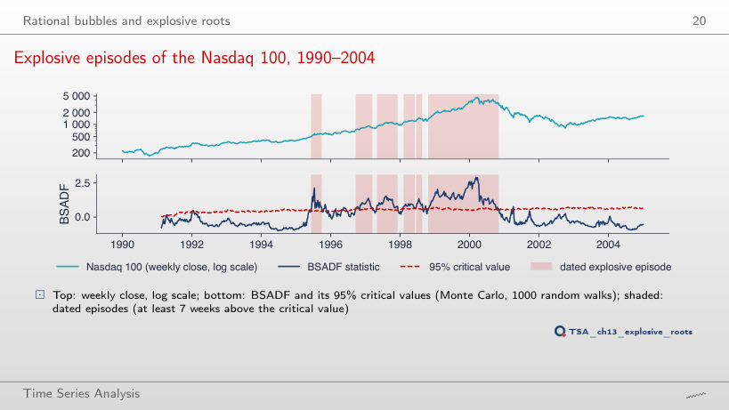
Answer
3: September 1996 – March 1997 (26 weeks), May – December 1997 (32) and October 1998 – November 2000 (107). The short episodes of 1995 and 1998 disappear; with length 1 BSADF would date 17 episodes, many of one week.
Interpreting the Nasdaq 100 tests
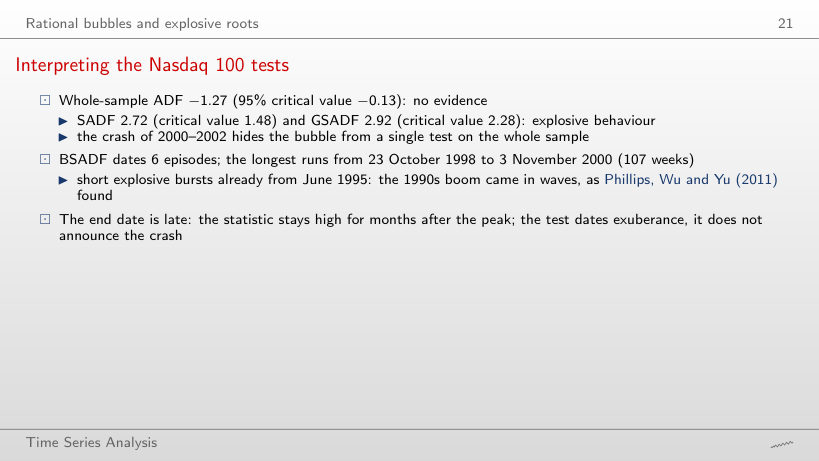
Answer
3: July – September 1997, November 1998 – July 1999 and August 1999 – April 2000. With higher critical values the long 1998–2000 episode splits in two and ends in April 2000, a month after the peak, not in November 2000. SADF (2.72) and GSADF (2.92) stay above their 99% critical values (1.92 and 2.86).
Bitcoin, BET and Shanghai: dated episodes
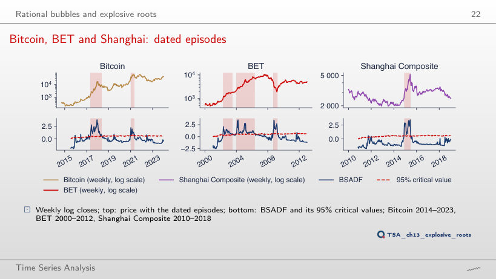
Answer
Yes: BSADF has been above its critical value since 28 November 2014, for 26 weeks in a row, so the episode is dated and still running. BSADF uses only the data up to each date, so dating the start is possible in real time; the end (26 June 2015) appears only after the peak.
Interpreting the three markets
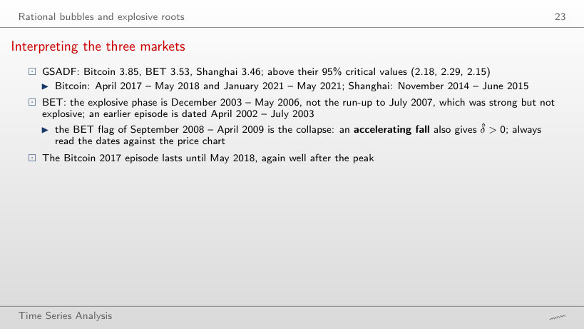
Answer
Yes: Bitcoin 3.85 against 2.63, BET 3.53 against 2.86, Shanghai 3.46 against 2.60. The dated episodes change, though: BET keeps five short episodes, and Bitcoin only its 2017 phase, split in two.
The LPPL model
Exponential and super-exponential growth
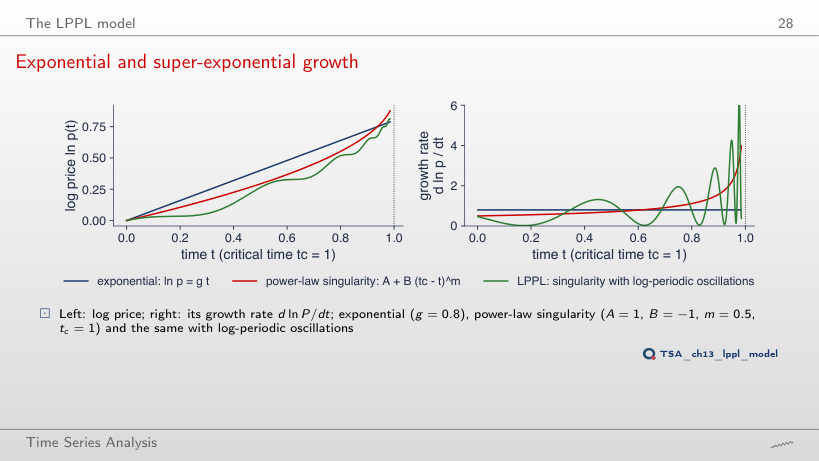
Answer
5.52, against 3.98 for m = 0.5, although at the start the rate is only 0.20 (against 0.50): a small m keeps the growth flat for a long time and concentrates it near tc. The exponential rate stays at 0.8 throughout.
Log-periodic oscillations
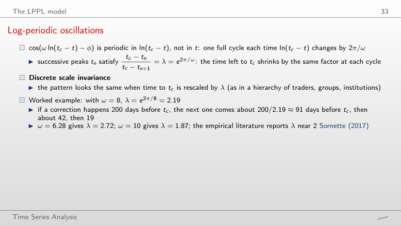
Worked example
Answer
λ = e2π/4 = 4.81: a correction 200 days before tc is followed by one 42 days before it, then 9. A small ω gives few, sparse cycles; for ω = 8 the factor is 2.19.
The pieces of the LPPL equation
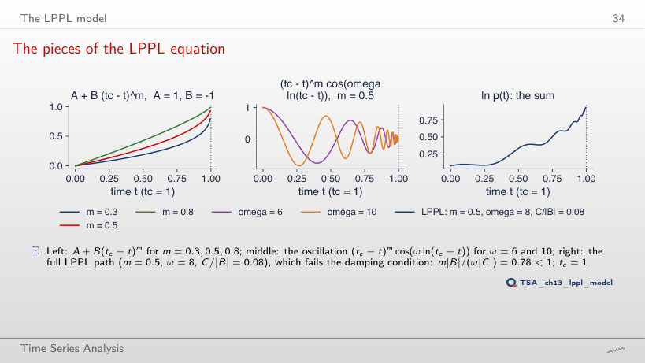
Answer
No: 0.5/(8 · 0.08) = 0.78 < 1. Although |C| is much smaller than |B|, the oscillating term is multiplied by ω in the derivative, and with ω = 8 the oscillations would make the hazard rate negative at times; the condition holds only for C/|B| ≤ 0.0625 at m = 0.5 and ω = 8.
Worked example: an LPPL value by hand
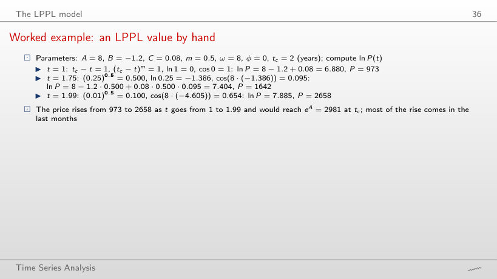
Worked example
Answer
About 2234, against 2658 for m = 0.5: a smaller m leaves a larger part of the rise for the last moments before tc, where the price reaches eA = 2981 for any m. At t = 1 the price is 973 for any m, because there tc − t = 1.
Parameter constraints: the filter
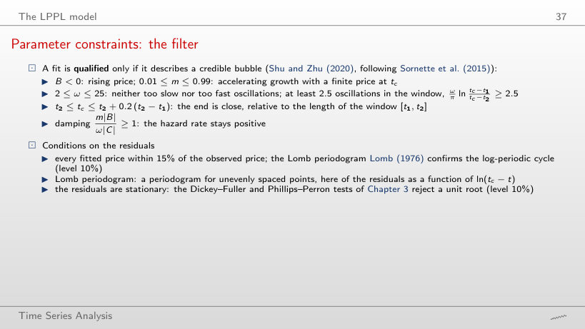
Worked example
Answer
4: the S&P 500 and BET stop at ω = 1.0, the lower edge of the search space [1, 50]. The search space is wider than the filter: a fit can have its smallest SSR at a value the filter rejects.
Estimation
The cost landscape
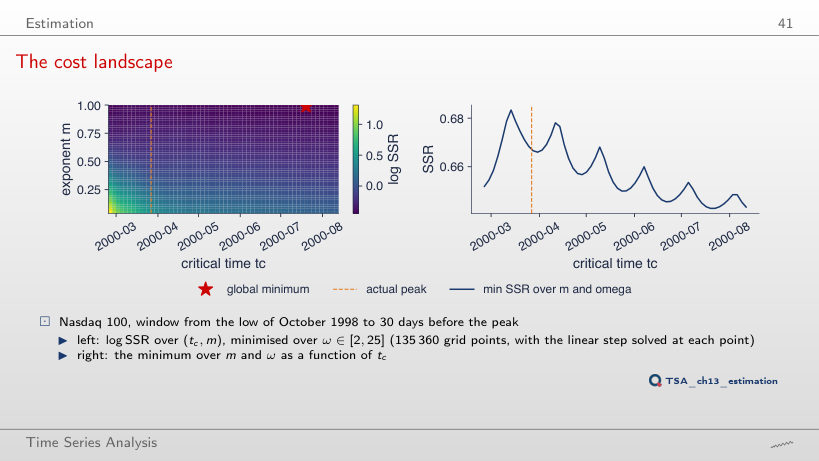
Answer
On 21 June 2000, still after the actual peak of 27 March 2000, with m = 0.99 and 4 local minima. Only for ω ≤ 3 does the minimum move to the edge of the grid (25 February 2000), with an SSR ratio of 1.49; for ω ≤ 7 the result is already the one of the lecture (19 July 2000).
Worked example: the Shanghai fit at the end of the window
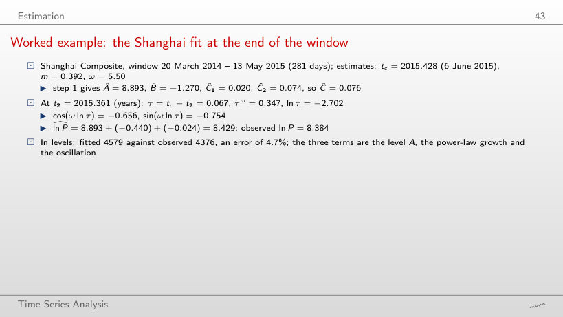
Worked example
Answer
By about 55%. With m and ω fixed, the SSR has a narrow valley around the estimate (+11% at 10 days); the landscape of “The cost landscape” is flat because there m and ω are re-estimated for every tc and compensate for the move.
LPPL fits 30 days before the peak
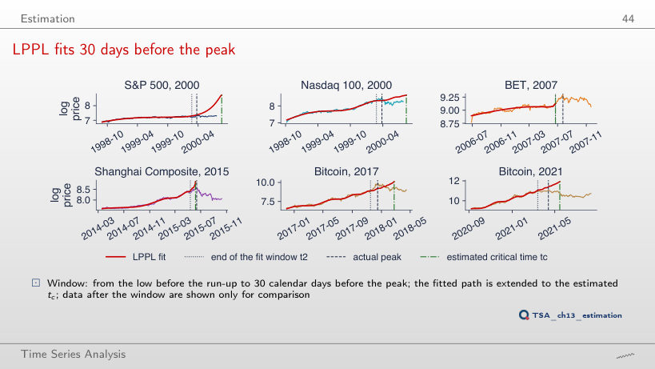
Answer
Only Shanghai, with the estimated tc 11 days after the peak. The S&P 500 and the Nasdaq 100 stay at m = 1 and at the upper bound of the search (190 and 178 days after the peak); even the data up to the peak do not make their run-ups super-exponential.
Interpreting the six fits
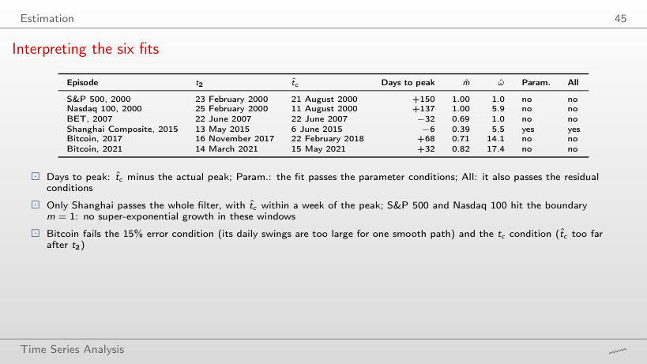
Answer
One, Bitcoin 2017; Shanghai, the only qualified fit at 30 days, fails 90 days before. Whether a fit qualifies depends on the end date of its window, which is why the indicator uses many windows.
Confidence from many windows
Estimated critical time across estimation windows
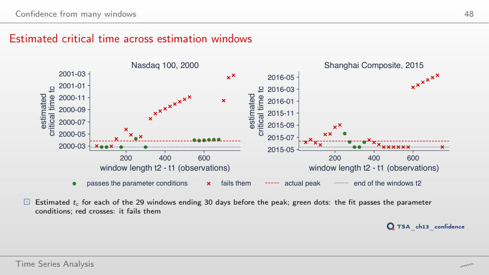
Answer
12 of 29, against 11 with the bound 0.2; for Shanghai 7 against 5. For the Nasdaq 100 the condition that removes most windows is the one on m (only 69% meet it), not the one on tc.
Interpreting the windows
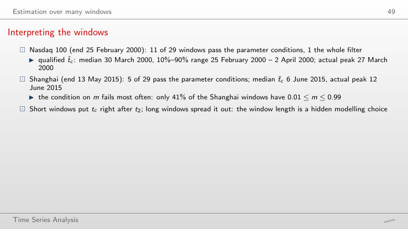
Answer
13% (2 of 15), against 41% over all 29: in 13 of the 15 long windows the Shanghai fit puts m at an edge of the search space (0.001 or 0.999). For the Nasdaq 100 all the long windows pass this condition.
The indicator around four peaks
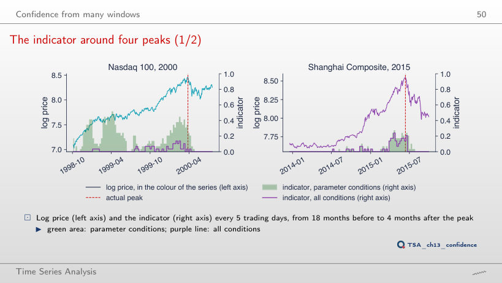
Answer
No: the parameter version reaches at most 0.28 (22 April 2015). With the threshold 0.2 there are 4 alarm dates before the peak, from 15 April 2015; the threshold fixed in advance decides whether a weak signal becomes an alarm.
The indicator around four peaks
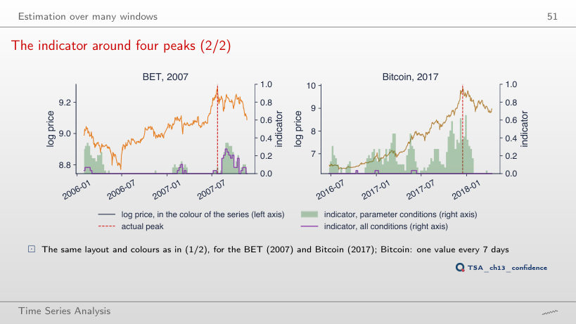
Answer
On 3 November 2017, six weeks before the peak (once more on 8 December). The largest value, 0.66, comes on 29 December 2017, after the peak: it describes the run-up that has already ended.
The critical time moves with the data
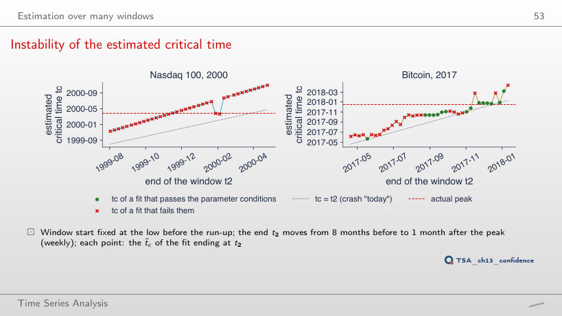
Answer
36 of 38: the fit would like a later tc than the search allows, so the estimated tc moves with t₂ only because the bound moves. For Bitcoin 2017 only 3 of 39 reach the bound; there 4 estimates sit exactly on the line tc = t₂ and 11 within 20 days of it.
Evaluation of crash predictions
Alarms over the whole sample
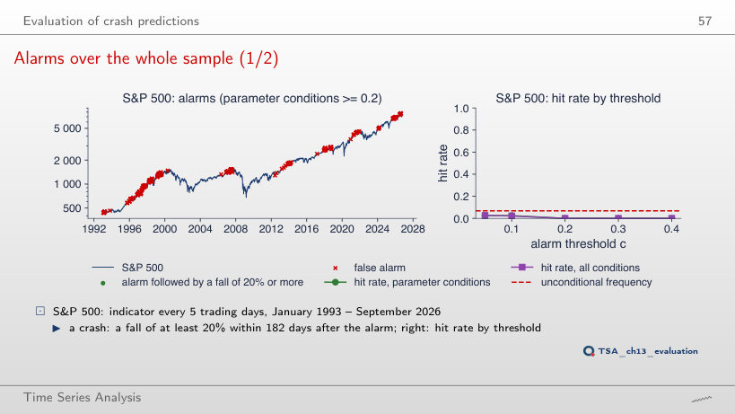
Answer
2.3% of the dates, against 6.8% for 20%; the hit rate after alarms stays at 0%. The base rate depends on the crash definition, which is why the definition must be fixed before the alarms are compared with it.
Alarms over the whole sample
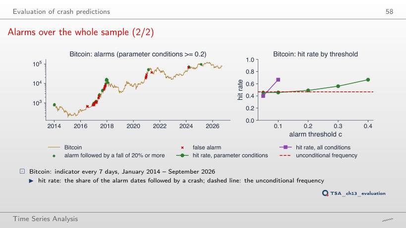
Answer
51%, against 47% at 182 days; after an alarm (c = 0.2) the rate is 55%. Falls of 20% are so frequent for Bitcoin that almost any rule seems to catch them: the relevant comparison is with the base rate.
Interpreting the evaluation
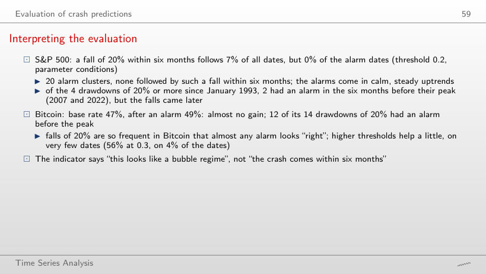
Answer
It stays below it: 16.9% against 23.1%. S&P 500 alarms come in calm, steady run-ups, after which falls, even of 10%, are rarer than on an ordinary day.
The daily closes of the six episodes and of the evaluation (S&P 500, Nasdaq 100, BET, Shanghai Composite, Bitcoin; data/market, EODHD) are not revised and reproduce the numbers of the lecture exactly; the browser finds the low, the peak, the falls, the hit rates and the alarm clusters again. Simulations of the chapter: the fundamental value and the shocks of the three AR(1) paths (seed 2026), the Normal and uniform draws of the Blanchard–Watson bubble (seed 13), in the order in which the chapter’s code draws them. The ADF, SADF, GSADF and BSADF tests are computed in the browser from the weekly log prices; their critical values are the chapter’s Monte Carlo values (1000 random walks with drift 1/T, seed 2026), exported with the 90%, 95% and 99% quantiles. The LPPL fits, with the Lomb and unit-root tests of their residuals, the cost landscape and the indicator series (the files ch13_ci_*.csv) come from the chapter’s code; the linear step (OLS) of the Shanghai example is redone in the browser. Variants that do not appear in the lecture (other horizons, other values of r and π, other levels and minimum lengths, other end dates of the LPPL window, other filter bounds and limits of ω, other thresholds, other crash definitions) are extra runs of the chapter’s code on the same data; the charts of “Interpreting the six episodes”, “SADF, GSADF and BSADF”, “Worked example”, “Interpreting the Nasdaq 100 tests”, “Interpreting the three markets”, “Log-periodic oscillations”, “Parameter constraints: the filter”, “Interpreting the six fits”, “Interpreting the windows” and “Interpreting the evaluation” are extra charts for slides that give only numbers.